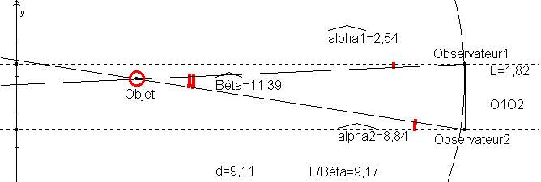

Contenu de la div 3
Contenu de la div 4
Contenu de la div 5
J'ai réalisée cette création a partir d'une image qui décrivez la parralaxe via des calculs assez théorique, je vous memts donc l'image en question.

J'ai repris la mise en page de l'image suivante pour replacer des créations réaliser 1 à 1 dans les cases.